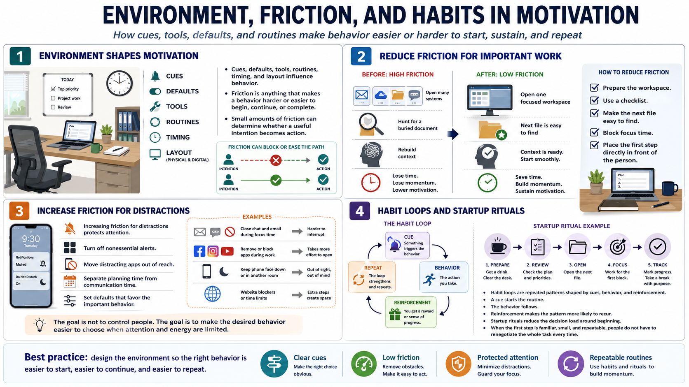

Friction, Environment, and Habit Loops
Connecting to LMS... Progress: in progress

Narration
Motivation is shaped by the environment. Cues, defaults, tools, routines, timing, and physical or digital layout all influence whether a behavior is easy to start and repeat. Friction is anything that makes a behavior harder or easier to begin, continue, or complete. Small amounts of friction can decide whether a useful intention turns into action.
Environment design often works better than relying on moment-to-moment willpower. If important work requires opening five systems, finding a buried document, and rebuilding context every time, motivation will suffer. Reducing friction might mean preparing the workspace, creating a checklist, making the next file easy to find, blocking focus time, or placing the first step directly in front of the person.
The same idea works in the opposite direction. Increasing friction for distractions can protect attention. That might include turning off nonessential alerts, moving distracting apps out of reach, separating planning time from communication time, or setting defaults that favor the important behavior. The goal is not to control people. The goal is to make the desired behavior easier to choose when attention and energy are limited.
Habit loops are repeated patterns shaped by cues, behavior, and reinforcement. A cue starts the routine, the behavior follows, and some form of reinforcement makes the pattern more likely to recur. Startup rituals can help with difficult work because they reduce the decision load around beginning. When the first step is familiar, small, and repeatable, people do not have to renegotiate the whole task every time.